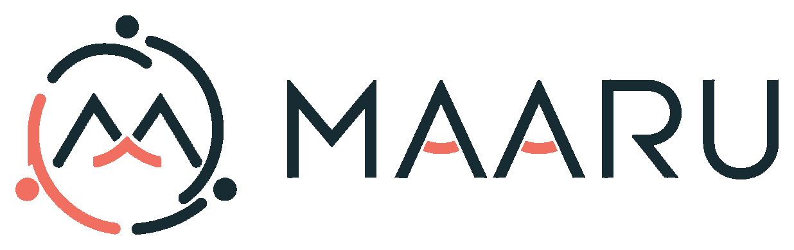
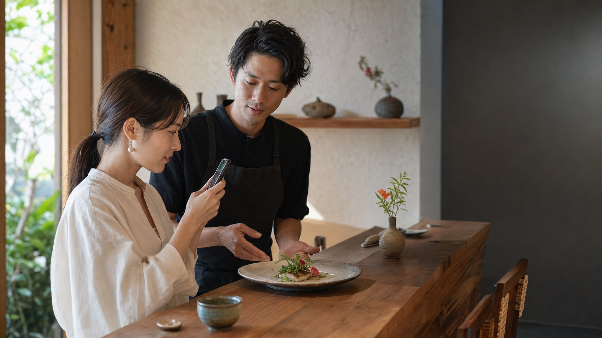
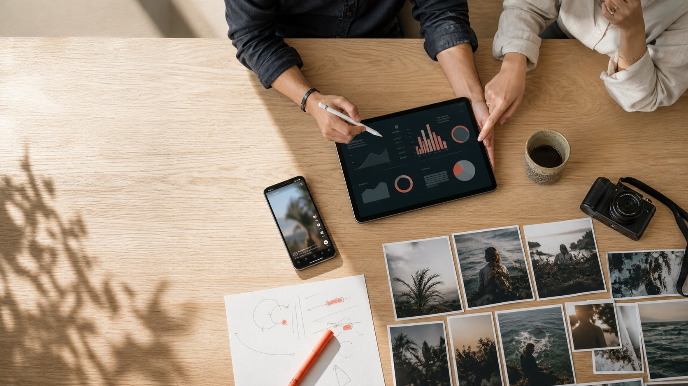
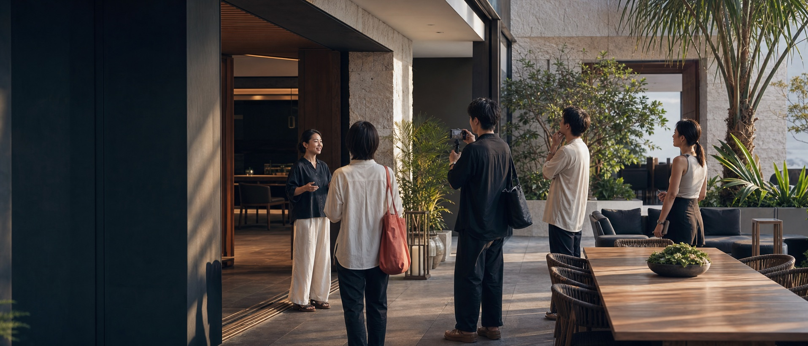

企業が
伝えたいこと
商品価値、ブランドの背景、選ばれる理由。

無料相談SERVICE / INFLUENCER PR
企業が伝えたいこと、クリエイターが発信したいこと、
フォロワーが行動したくなる理由。
その3つが重なる企画を、沖縄を知るMAARUが設計します。
WHY PLANNING MATTERS
01フォロワー数の多い人に商品を渡すだけでは、広告感の強い投稿になり、生活者の行動にはつながりません。大切なのは、商品や場所の魅力をクリエイター自身が発見し、フォロワーにとって意味のある体験として伝えられる状態をつくることです。
商品価値、ブランドの背景、選ばれる理由。
自分らしい発見、体験、フォロワーへの誠実さ。
行く理由、選ぶ理由、自分にとっての価値。
この3つを重ね、 「行ってみたい」に変える。
FROM STRATEGY TO ACTION
紹介して終わりではありません。目的を定め、適切な人を選び、体験と投稿を整え、結果を次の施策へつなげます。
認知、保存、予約、来店など、事業課題に合う目的を整理します。
誰に、何を、どのような体験として届けるかを設計します。
数字、世界観、フォロワー属性、地域との関係性から人選します。
投稿したくなる発見と、行きたくなる見せ方を現場でつくります。
表現の自由を尊重しながら、目的と必要情報を正しく届けます。
リーチや保存、反応を確認し、次に活かす改善点を整理します。

LOCAL EXPERIENCE DESIGN
投稿のためではなく、
伝えたくなる体験をつくる。
SERVICE PLANS
まず試したい店舗から、沖縄進出や大規模なローンチまで。目的と事業のフェーズに合わせて選べます。
SMALL START / TEST
200,000円〜
税別 / 1施策初めてインフルエンサーPRを行う店舗や、まず一度試してみたい事業者に。最低限の企画と進行管理を含み、投稿して終わらない最初の施策をつくります。

DESIGN / IMPROVE
350,000円〜
税別 / 1施策発信量を増やすだけでなく、ターゲットと行動導線を整理。複数のクリエイターと媒体を組み合わせ、結果を分析して次の成長へつなげます。

MARKET ENTRY / LAUNCH
700,000円〜
税別 / 1施策県外企業の沖縄進出、新店舗、新施設、商品発売に。市場と地域の感覚を踏まえた見せ方から、複数回の発信、体験会まで総合的に設計します。
表示価格はすべて税別です。
起用人数は企画内容、媒体、クリエイターの影響力や制作内容により調整します。
著名クリエイター起用費、商品提供費、交通費、広告費、二次利用料などは別途お見積りとなる場合があります。
PLAN COMPARISON
価格の差は、人数だけではなく、企画と成果に関わる範囲の差です。
| 支援内容 | STARTER | GROWTH | OKINAWA LAUNCH |
|---|---|---|---|
| 基本企画 | ● | ● | ● |
| KPI・ターゲット設計 | 簡易 | ● | ● |
| 行動導線設計 | — | ● | ● |
| 沖縄市場・競合整理 | — | — | ● |
| クリエイター目安 | 3名 | 5〜6名 | 10名〜 |
| 対応媒体 | 1媒体 | 最大2媒体 | 複数媒体 |
| 効果レポート | 基本 | 詳細・改善提案 | 詳細・次回戦略 |
FOR YOUR BUSINESS
新店舗、新施設、飲食、美容、小売、ホテル、観光、新商品、イベント、県外企業の沖縄進出など、30種類以上の業種に対応しています。
自社で実施できるか相談する →FAQ
標準的な起用費を含む想定ですが、影響力の大きいクリエイターや特殊な制作を伴う場合は別途お見積りします。ご提案時に費用の内訳を明確にします。
必須情報や事実関係を確認します。一方で、クリエイター自身の言葉や表現を活かすことが自然な発信につながるため、企画段階で双方の認識を整えます。
通常は3〜6週間が目安です。企画規模、キャスティング人数、施設のオープン日などに応じてスケジュールをご提案します。
可能です。単独起用や特定クリエイターへのご相談も承ります。目的によっては複数名での実施が効果的な場合があるため、最適な方法をご案内します。
二次利用の範囲、媒体、期間を事前に定めることで利用できます。クリエイターとの権利調整と追加費用が必要です。
LET'S MOVE OKINAWA
どのプランが合うか分からない段階からご相談いただけます。事業の内容、目標、ご予算を伺い、最適なPRの形を一緒に考えます。